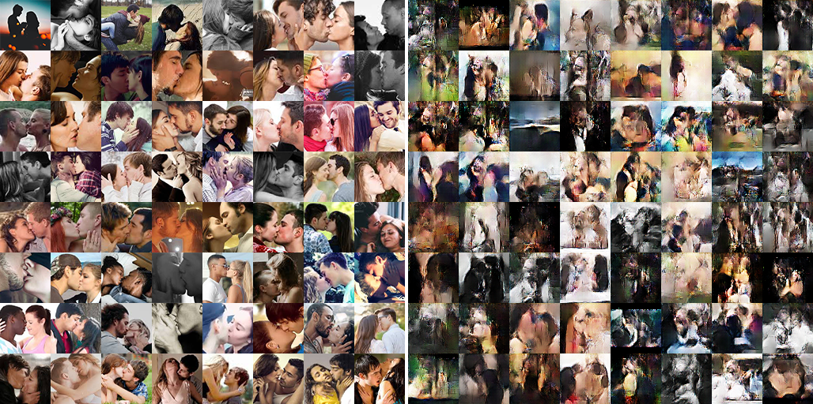
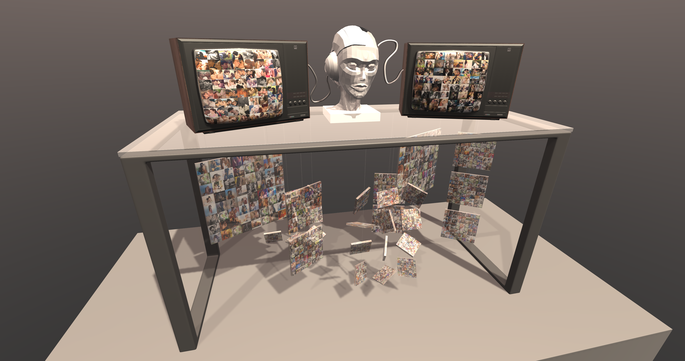

愛 [ ai ]
Unity / Artificial Intelligence / Composite Media Sculpture
2019 by Wu,Po-Yao

作品概念
愛，羅馬拼音 [ aɪ ]，同時也是人工智慧(Artificial Intelligence)的縮寫(AI)。
此作品取名為「愛[ aɪ ]」，是想探討愛情與人與現今最熱門的科技——人工智慧三者之間的關係。
人類對愛情擁有想像，總是會情不自禁地嚮往與追逐。人類生下來知道什麼是愛嗎？
為什麼就算沒有嘗過戀愛滋味的人們，不論透過充滿粉紅色泡泡的連續劇，或是羅曼電影這些視覺影像，
卻依然能感受到小鹿亂撞與想戀愛的情緒呢？那如果給一個機器閱覽成千上萬個與「愛情、親吻、擁抱」相關的照片，
它是否有可能也會產生對於戀愛的想像與悸動呢？藉由使用DCGAN人工智慧演算模型，
將在網路上蒐集的約略四千張情侶親密的影像資料集送入電腦進行運算。經過了上百批次的計算與學習後，
電腦似乎可以開始能夠掌握這些圖像的面貌，開始能描繪這些有關「戀愛」的輪廓，
並且能夠生成出它對於這些集體影像的「理解」與「想像」。我們可以依稀看到兩個擁抱的人、
看見接吻的模糊相貌。然而，關於愛情的本質，機器將如何從這些影像中學習呢？相反地，
也讓人不禁思考——難道人類就真的知道何謂「愛」的模樣嗎？如今人工智慧在工程領域正追求一個高度智慧、
甚至超越人類智慧的存在，卻較少探究情緒因素對於智慧發展所造成的影響、甚至探究情緒的來源。
如果我們以「愛」作為人類情感存在的極致，那麼這個連人類都難以詮釋、描摹的詞彙，
是否就成為人類之所以為人類的存在？隨著科技技術的發展，在未來的某個年歲，機器是否看到這些影像後，
也會萌發對出「愛」的渴望呢？

作品技術
本作品核心使用DCGAN人工智慧演算法，利用網路爬蟲在網路上蒐集約略四千多張有關「接吻、擁抱、情侶」等影像。
並將此資料庫作為訓練目標供機器學習。經過三百批次的學習之後。影像將從一片模糊的亂數開始產生色塊與輪廓，
並開始逐漸收斂。並可以開始觀察到機器產生出的影像充滿對於浪漫場景的想像。
除了學習模仿，機器也能透過學習完成的演算模型產生出全新的影像。希望觀者透過影像，能夠引發一些感觸與聯想。

作品展示方式
於240x120cm展場空間內，以一張桌子為主體，上面擺放一座由複合媒材製作的機器雕塑像，
兩旁有放置電視機，分別播放出訓練資料集（網路上蒐集關於「戀愛」的影像）與電腦生成的影像。
兩台電視機的訊號線將會連接於機器人雕塑上，想藉此強調訓練資料集作為輸入，傳送至電腦運算並生成結果，
彰顯輸入與輸出的差異。觀者觀察輸入與輸出差異的同時，也能同時欣賞由機器所描繪出的新影像。
而桌面下方將懸掛透明輸出影像，營造如夢似幻的透視疊影效果，希望觀者能從這些繽紛的影像中，
窺看機器對於「愛」在圖像上的理解與詮釋。